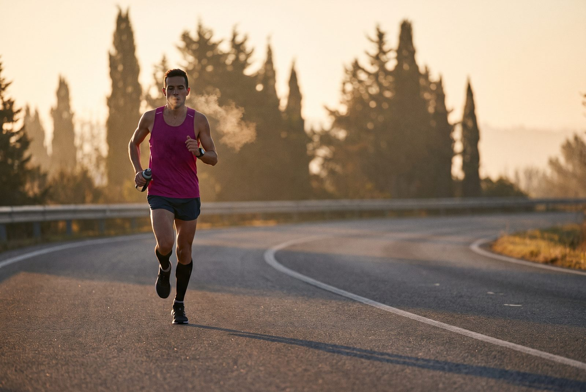

42 СтартПодготовка к марафону по дням: питание, вода, гели, ошибки
Пошаговый план от тренера клуба ПРОБег: углеводная загрузка, снижение клетчатки, насыщение гликогеном, утро старта, поведение на дистанции 5–42 км и первые 60 минут после финиша. С FAQ по таймингу гелей, солевых таблеток и изотоников — и с разбором 5 типичных ошибок, которые делают почти все.
Кому и зачем нужен этот чек-лист
Этот чек-лист мы в клубе ПРОБег собрали из опыта подготовки к забегам на 5, 10, 21.1 и 42.2 км и проверяли на контрольных длительных в Симферополе. Он подойдёт, если вы бежите свой первый полумарафон или марафон и хотите не придумывать план питания с нуля — а идти по проверенной схеме.
Чек-лист — это не про «идеально». Он про то, чтобы не сделать типичную глупость: не наесться жирного на ужин, не стартовать без геля, не пропустить пункт питания и не бежать первые 10 км в темпе, на который не хватит. На длинной дистанции 90% неудач — это не плохая форма, а плохая подготовка по мелочам. Эти мелочи мы и закрываем.
Подготовка к марафону делится на 5 фаз: 10–7 дней (углеводная загрузка), 6–4 дня (снижение клетчатки), последние 3 дня (насыщение гликогеном), день накануне и утро старта. Дальше — поведение на дистанции и восстановление в первый час после финиша. Если идти по фазам, марафон перестаёт быть лотереей и становится управляемой задачей.
За 10–7 дней до старта: углеводная загрузка
Цель этой фазы — увеличить запасы гликогена в мышцах и печени. На марафоне гликоген кончается к 25–30 км у тех, кто не загружался, и после 32–35 км у тех, кто загружался правильно. Разница в 7–10 км — это вопрос «добежал или сошёл».
- Увеличить долю долгих углеводов в рационе до 70–80% от общей калорийности.
- Основа рациона: крупы, цельнозерновой хлеб, овощи и фрукты с низким риском вздутия.
- Исключить жареное мясо, жирные соусы, чипсы и продукты промышленной переработки.
- Снизить общую физическую активность до минимума — избегать набора лишнего веса из-за сладкого.
- Отказаться от любых новых продуктов и незнакомых способов приготовления пищи.
- Отказаться или свести до минимума кофе, колу и любую сладкую пищу и воду.
Ключевая мысль: мы увеличиваем гликоген, а не «набираем вес». Если за неделю набрали 1–1.5 кг — это нормально (это вода, связанная с гликогеном). Если набрали 3+ — значит, перебрали с жирами и сахаром, и марафон будет тяжелее. Базовые принципы питания бегуна в этой фазе работают как обычно, просто со сдвигом пропорций в сторону углеводов.
За 6–4 дня до старта: снижение клетчатки
Смысл фазы — убрать из рациона всё, что может вызвать вздутие, тяжесть в животе и неожиданные «перекусы» на дистанции. Клетчатка полезна в обычной жизни, но за 4–6 дней до марафона она враг: килограмм яблок на завтрак = полный живот на 15-м километре.
- Перейти на углеводы с низким гликемическим индексом и минимальным содержанием клетчатки.
- Полностью убрать водянистую клетчатку: свежие овощи, грибы, большинство фруктов.
- Основной рацион: макароны из твёрдых сортов пшеницы, рис, простые крупы (ячневая, овсяные хлопья, гречка).
- Сохранять мягкую диету, не меняя привычный состав блюд кардинально.
Никаких экспериментов. Если обычно едите гречку — ешьте гречку. Если обычно макароны — ешьте макароны. Не надо за неделю до марафона открывать для себя булгур или киноа. Желудок в день забега должен работать на привычной схеме.
Последние 3 дня перед стартом: насыщение гликогеном
Эта фаза — финальная загрузка. Гликоген уже почти на максимуме, осталось не сорвать процесс жирной пищей и держать печень в порядке.
- Максимально насытить организм гликогеном.
- Строго исключить жирную пищу — каждый грамм жира сверх нормы сейчас нагружает печень и замедляет восстановление.
- Поддерживать минимальную двигательную активность: полный отдых или лёгкие прогулки / пробежки за 2–3 дня до забега.
- Пить воду с регидроном или воду типа «Боржоми» — поддержать электролитный баланс.
Главное правило трёх последних дней: ничего нового. Никакой экзотики, никаких «по совету друга» энергетиков, никаких незнакомых блюд. Каждый приём пищи — из списка, который проверен на тренировках.
День накануне старта
Последние 24 часа перед стартом — это про то, чтобы ничего не забыть и не переесть. Спортсмены называют это «день тишины»: не тренируемся, не экспериментируем, не суетимся.
- Ужин должен состоять только из простых углеводов: белый рис, паста без жирных соусов. Без мяса, без сыра, без орехов.
- Прекратить приём любой твёрдой пищи за 3–4 часа до сна — дать желудку отдохнуть.
- Подготовить экипировку по правилу «чуть прохладнее»: на старте будет теплее, чем кажется утром.
- Собрать беговой пояс, номер, чип. Проверить заряд всех гаджетов (часы, наушники, телефон).
- Обязательно: подготовить медицинскую справку — без неё к участию не допустят. Перед подготовкой к марафону рекомендуется консультация врача, особенно при хронических заболеваниях, после травм и в возрасте старше 40 лет без регулярной нагрузки.
Медсправка — это типовая причина, по которой новичка снимают с дистанции утром. Соберите её накануне, положите в пакет с номером и не трогайте до старта.
Утро старта: за 2–3 часа до выстрела
Утро — это про завтрак, воду, гель и разминку. Не про «сейчас добегу 5 км для разогрева»: на марафоне первые километры должны быть медленными, и разминка только заберёт силы, нужные потом.
- Выпить 0,5–0,7 л жидкости, обогащённой углеводами или электролитами. Не кофе, не сок, не газировка.
- Позавтракать максимально простой углеводной едой: банан, белый багет с джемом, овсянка на воде. Без белков и жиров. Идеально — то, что едите перед обычной утренней пробежкой.
- За 15 минут до старта съесть один гель или солевую таблетку (лучше гель) + желейные конфеты. Но всё это стоит проверить на контрольных длительных — эксперименты утром перед стартом запрещены.
- Сделать лёгкую динамическую разминку: 5–7 минут суставной гимнастики, пара ускорений по 50–80 м, никакого бега на 3–5 км «для разогрева».
На дистанции: вода, гели, электролиты
Маленькая сводка по цифрам — на случай, если времени мало. Подробности по каждому пункту — ниже.
Старт. Не поддаваться адреналину. Бежать строго в запланированном темпе или по пульсу (для новичка — 140–155 уд/мин). Первые 10–15 км должны ощущаться слишком медленными — это нормально.
Вода. Начинать пить с первой же точки питания, даже если нет жажды. По несколько глотков на каждом пункте. На первые пункты питания берём с собой маленькую бутылочку воды, лучше складную, чтобы потом не мешала.
Лимит желудка. При быстром беге усваивается не более 200 мл воды за раз. Больше заливать нельзя — будет тяжесть и спазмы.
Гели. Начать принимать через 40 минут после старта (лучше с первых 5 км, у каждого свой темп движения). Далее — каждые 30 минут или каждые 5 км, обязательно запивая водой. Гель без воды — это вязкая масса в желудке, которая не усваивается.
Электролиты. Первую солевую таблетку съесть после 20 км. Вторую — примерно на 30-м километре. Судороги во второй половине дистанции в 80% случаев — это потеря натрия, а не калия или магния.
Регидрон. По возможности нести с собой небольшую бутылочку с регидроном. Это только при условии, что в тренировочном процессе вы так же делали и знаете, как отреагирует организм. Если не тестировали — лучше чистая вода для запивания геля.
Правило трассы. Ничего нового. Использовать только опробованные гели, напитки и таблетки. Не покупать новинки на экспо. Если на выставке перед стартом вам вручили новый вкус геля «попробуйте» — поблагодарите и выбросьте.
Питание. Не смешивать обычную еду, гель и изотоник одновременно. Чередовать их, обычную еду запивать чистой водой. Три источника сахара одновременно = удар по желудку, который вы запомните надолго.
Боковой спазм. Если закололо в правом боку — сбавить темп до шага, сделать глубокий выдох, при необходимости использовать но-шпу (надавить пальцами под ребро; но-шпу с собой обязательно!).
Финишная прямая. Не делать резких ускорений («кик»), чтобы не надорвать связки. Держать технику, контролировать пульс. Марафон заканчивается не на финише — он заканчивается на следующее утро, и резкий «кик» аукнется икроножным на 3-й день.
После финиша: первые 60 минут
Первый час после финиша определяет, насколько быстро вы восстановитесь. Ошибка новичков — «добежал, снял номер, поехал домой». К вечеру такой герой не может встать с дивана, а на следующий день не может выйти на пробежку.
- В течение первого часа выпить изотоник с аминокислотами для запуска восстановления.
- Переодеться в сухое и тёплое, надеть компрессионные гетры.
- В первые два часа употребить порцию полноценного белка и сложных углеводов.
- Провести лёгкую растяжку забитых мышц только после того, как пульс придёт в норму.
5 типичных ошибок любителей — и как их избежать
Эти пять ошибок встречаются у 80% бегунов-любителей. Если вы их узнали в себе — вы уже на полшага ближе к нормальному финишу.
- Голод на трассе. Энергии хватает ровно на 2 часа. Начинайте есть гели раньше, чем почувствуете упадок сил — на 40-й минуте, а не когда «уже ноги не идут».
- Отсутствие воды. Жажда на марафоне — это уже сигнал обезвоживания. Пейте по графику: 200–250 мл каждые 20 минут или по несколько глотков на каждом пункте.
- Эксперименты. Новый гель, купленный по совету друга на экспо, может выйти обратно прямо на дистанции. Тестируйте всё питание на тренировках — минимум на двух контрольных длительных по 25+ км.
- Быстрый старт. Самая частая причина схода. Первые 10–15 км должны ощущаться слишком медленными. Обязательно изучите трассу заранее: старт и финиш, когда сдать вещи в гардероб, профиль высот — горки и спуски. Понимание рельефа удержит от лишнего ускорения на эмоциях. Если вы бежите свой первый полумарафон или марафон, базовый план подготовки к забегу 5 или 10 км поможет не перепутать темп на первых километрах.
- Игнорирование соли. Судороги и падение выносливости во второй половине гонки часто связаны с потерей натрия. Солевые таблетки обязательны с 20-го километра, и это не «для слабых» — это физиология потоотделения.
И ещё одна ошибка, которая не вошла в список, но важна: бросить бегать после финиша. После первого марафона многие «насыщаются» и уходят с головой в другие дела. Если не хотите потерять форму — возвращайтесь к регулярным пробежкам в течение 2 недель, пока ноги ещё помнят дистанцию.
Частые вопросы
Когда начинать углеводную загрузку перед марафоном?
За 10–7 дней. Цель — увеличить запасы гликогена в мышцах и печени, чтобы хватило на 2–3 часа работы без «стены». 70–80% калорий из долгих углеводов, а не «ем всё подряд». Если начать раньше — организм адаптируется и просто перестанет запасать сверх нормы.
Можно ли есть новые гели на забеге?
Нет. Гели, изотоники, таблетки — только опробованные на длинных тренировках. Новый вкус, новая концентрация, новая марка — это риск вернуть всё на дистанции. Тестируйте всё, что планируете съесть на забеге, минимум на двух контрольных длительных по 25+ км.
Сколько воды пить на марафоне?
Ориентир — 200–250 мл каждые 20 минут, или по несколько глотков на каждом пункте питания. Больше 200 мл за раз при быстром беге не усваивается — будет тяжесть и спазмы. Начинайте с первого пункта, даже если не чувствуете жажды: жажда — это уже сигнал обезвоживания.
Нужны ли солевые таблетки, если не жарко?
Да, со второй половины дистанции. Потери натрия с потом идут при любой температуре — это не про жару, а про объём пота. Первая таблетка — после 20 км, вторая — на 30-м километре. Если несёте регидрон — только если тренировались с ним и знаете реакцию.
Что есть утром перед стартом?
Простые углеводы, без жиров и белков. Банан, белый багет с джемом, овсянка на воде — за 2–3 часа до выстрела. Идеально — то, что едите перед обычной утренней пробежкой. За 15 минут до старта — гель. Не экспериментируйте утром с новыми продуктами, даже если «все хвалят».
Сколько времени нужно на восстановление после марафона?
В первые 60 минут — изотоник с аминокислотами и сухая одежда. В первые 2 часа — порция белка и сложных углеводов. Лёгкая растяжка — только когда пульс придёт в норму. Полное восстановление мышц — 7–14 дней, в это время только лёгкие пробежки или полный отдых. Не пытайтесь «закрепить результат» пробежкой на следующий день — это путь к травме.